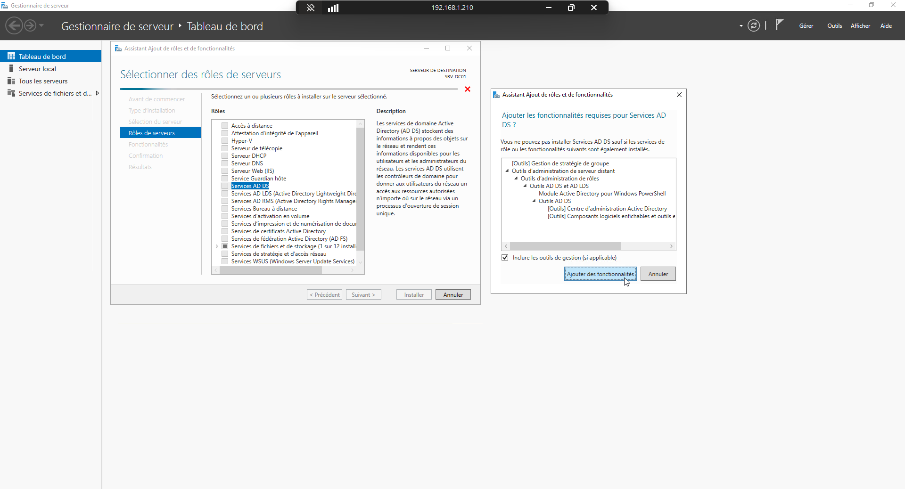
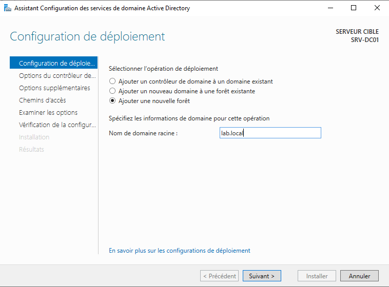
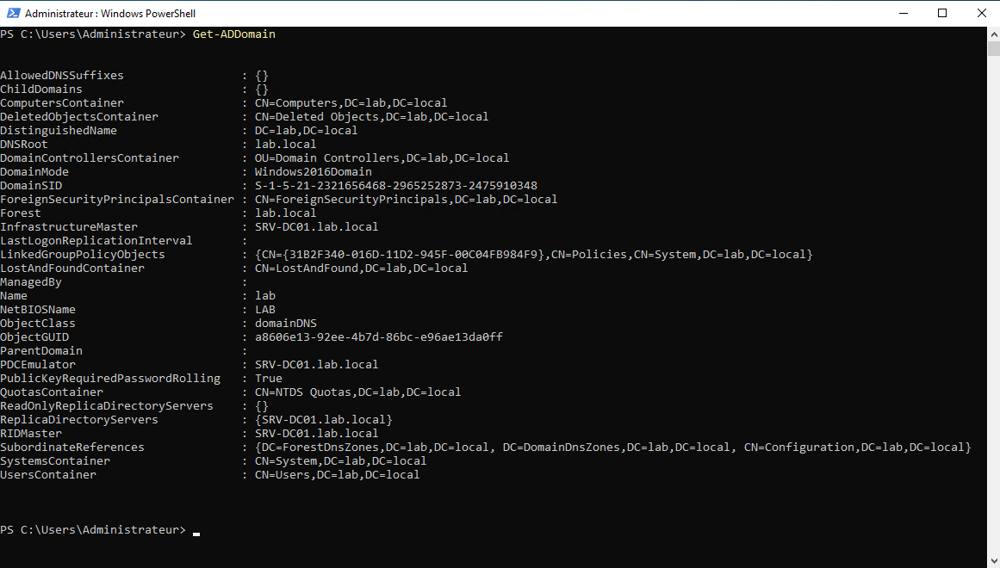
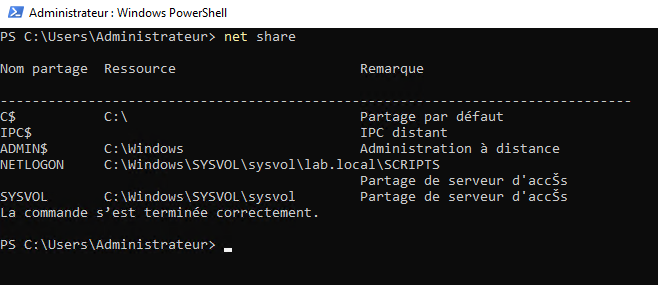
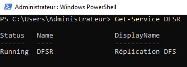
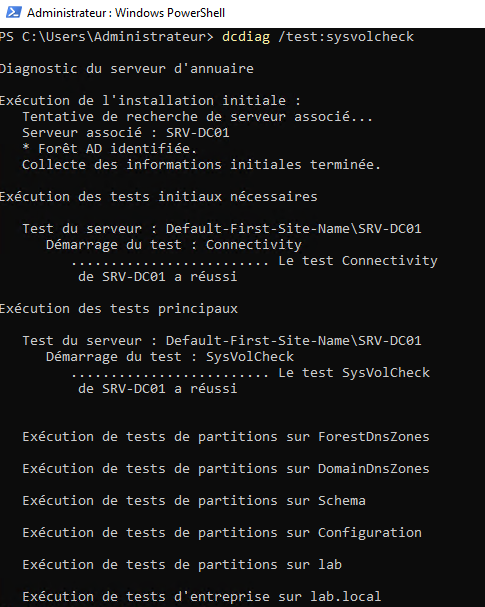
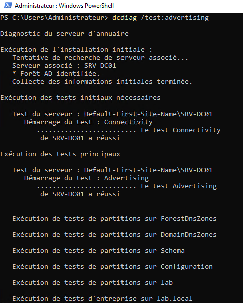

TP04 — Promotion du contrôleur de domaine
Théorie : Cours - Active Directory
Captures :99-Captures/TP04/· Prérequis : TP03-Creation-WIN11-CLIENT01
Objectif
Installer le rôle AD DS et promouvoir SRV-DC01 en contrôleur de domaine lab.local.
Contexte
Le serveur SRV-DC01 est installé. Il doit devenir le point central d'authentification du laboratoire.
Architecture
| Élément | Valeur |
|---|---|
| Serveur | SRV-DC01 |
| IP | 192.168.1.210 |
| Domaine | lab.local |
Prérequis
- [v] TP03-Creation-WIN11-CLIENT01 validé
- [v] SRV-DC01 accessible avec IP statique
Étapes
1. Installation du rôle AD DS
Server Manager → Add Roles and Features → Active Directory Domain Services

2. Promotion en contrôleur de domaine
Créer une nouvelle forêt et le domaine lab.local.

3. Vérification
Get-ADDomain
net share
Get-Service DFSR
dcdiag /test:sysvolcheck
dcdiag /test:advertising





Résultat attendu
Domaine lab.local opérationnel avec SRV-DC01 comme premier contrôleur de domaine.
Validation
- [v] Rôle AD DS installé
- [v] Domaine
lab.localcréé - [v] Promotion DC réussie
Progression
| Étape | Lien |
|---|---|
| Prérequis | TP03-Creation-WIN11-CLIENT01 |
| Suite recommandée | → TP05-Creation-OU |
| Branches | Cours - Comptes privilégiés |
| Théorie | Cours - Active Directory |
Suivi : Progression